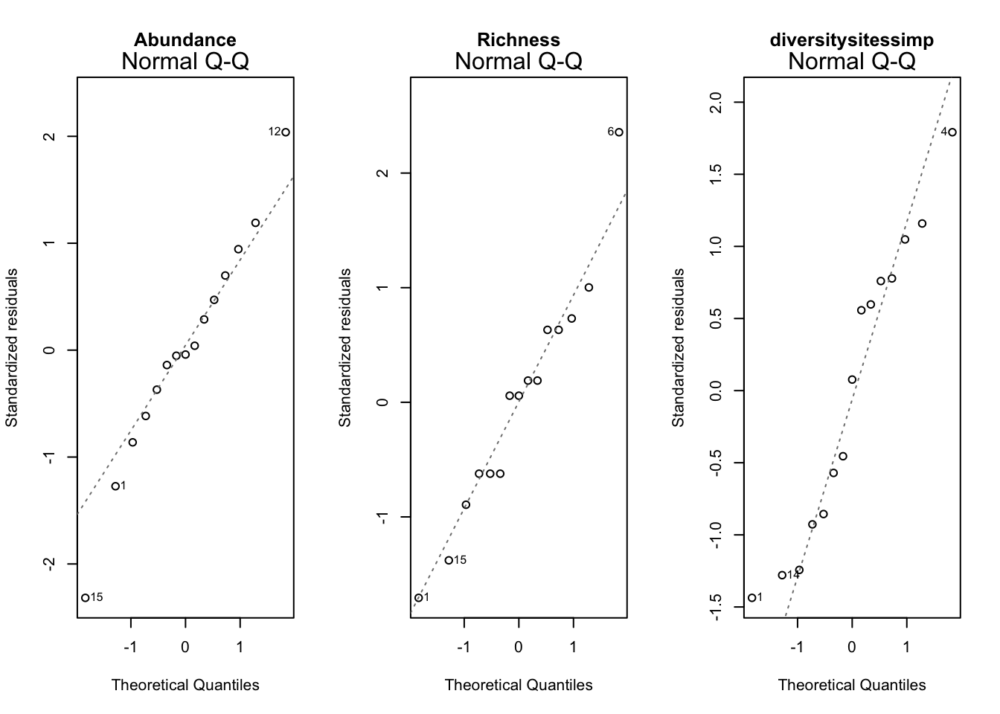

3 Chapter 1
3.1 Hypothesis 1: There is no difference in bat species diversity, abundance, richness between forest types
3.1.1 Abundance ~ Forest Type
Lets get boxplots of the forest types

There appear to be outliers here. Let’s see conduct an anova between abundance and forest type. But first lets test assumptions.
## [1] 141.5## [1] 71.5## [1] 321.8## Levene's Test for Homogeneity of Variance (center = median)
## Df F value Pr(>F)
## group 2 0.5488 0.5914
## 12##
## Shapiro-Wilk normality test
##
## data: b1$Abundance
## W = 0.95557, p-value = 0.6159##
## Shapiro-Wilk normality test
##
## data: b1[b1$Forest.Type == "CCR", ]$Abundance
## W = 0.89691, p-value = 0.393##
## Shapiro-Wilk normality test
##
## data: b1[b1$Forest.Type == "PCR", ]$Abundance
## W = 0.87606, p-value = 0.2918##
## Shapiro-Wilk normality test
##
## data: b1[b1$Forest.Type == "SLR", ]$Abundance
## W = 0.94741, p-value = 0.7187##
## Shapiro-Wilk normality test
##
## data: aov.abun.resid
## W = 0.98754, p-value = 0.9975The p-value is not less than .05 for either, assuming homogeneity of variances and normality.


## Df Sum Sq Mean Sq F value Pr(>F)
## Forest.Type 2 574.5 287.3 1.611 0.24
## Residuals 12 2139.2 178.3Not significant (p= .24)
3.1.2 Richness ~ Forest Type.
First a boxplot:

Now assumptions:
## [1] 13.2## [1] 24.8## [1] 8.2## Levene's Test for Homogeneity of Variance (center = median)
## Df F value Pr(>F)
## group 2 0.254 0.7798
## 12##
## Shapiro-Wilk normality test
##
## data: b1$Richness
## W = 0.9586, p-value = 0.668##
## Shapiro-Wilk normality test
##
## data: b1[b1$Forest.Type == "CCR", ]$Richness
## W = 0.91408, p-value = 0.4925##
## Shapiro-Wilk normality test
##
## data: b1[b1$Forest.Type == "PCR", ]$Richness
## W = 0.77342, p-value = 0.04834##
## Shapiro-Wilk normality test
##
## data: b1[b1$Forest.Type == "SLR", ]$Richness
## W = 0.80397, p-value = 0.08727##
## Shapiro-Wilk normality test
##
## data: aov.rich.resid
## W = 0.93778, p-value = 0.3553The p-value is not less than .05 for either, assuming homogeneity of variances and normality.


## Df Sum Sq Mean Sq F value Pr(>F)
## Forest.Type 2 32.93 16.47 1.069 0.374
## Residuals 12 184.80 15.40Not significant (p-values=0.374)
3.1.3 Diversity ~ Forest Type
First a boxplot:

Now assumptions:
## [1] 0.006321939## [1] 0.002424467## [1] 0.002775702## Levene's Test for Homogeneity of Variance (center = median)
## Df F value Pr(>F)
## group 2 0.6115 0.5586
## 12##
## Shapiro-Wilk normality test
##
## data: b1$diversitysitessimp
## W = 0.95772, p-value = 0.6528##
## Shapiro-Wilk normality test
##
## data: b1[b1$Forest.Type == "CCR", ]$diversitysitessimp
## W = 0.92041, p-value = 0.5326##
## Shapiro-Wilk normality test
##
## data: b1[b1$Forest.Type == "PCR", ]$diversitysitessimp
## W = 0.9067, p-value = 0.448##
## Shapiro-Wilk normality test
##
## data: b1[b1$Forest.Type == "SLR", ]$diversitysitessimp
## W = 0.79006, p-value = 0.06708##
## Shapiro-Wilk normality test
##
## data: aov.rich.resid
## W = 0.93778, p-value = 0.3553The p-value is not less than .05 for either, assuming homogeneity of variances and normality.


## Df Sum Sq Mean Sq F value Pr(>F)
## Forest.Type 2 0.00186 0.000929 0.242 0.789
## Residuals 12 0.04609 0.003841Not significant, p-value -0.789
3.1.4 Abundance, Richness and Diversity ~ Combined Forest Type
Given the similarities between CCR and PCR in the data so far, I will merge them into a new category, “MXD”, and rerun analyses for Abundance, Richness, and Diversity.
First assumptions
## [1] 94.94444
## [1] 321.8
## [1] "Abundance Levene test not significant, doesnt violate assumptions levene.Abundance"
## [1] "Abundance Shapiro Test is not significant, meets assumption of normality."## NULL
## [1] 18.23333
## [1] 8.2
## [1] "Richness Levene test not significant, doesnt violate assumptions levene.Richness"
## [1] "Richness Shapiro Test is not significant, meets assumption of normality."## NULL
## [1] 0.003895248
## [1] 0.002775702
## [1] "diversitysitessimp Levene test not significant, doesnt violate assumptions levene.diversitysitessimp"
## [1] "diversitysitessimp Shapiro Test is not significant, meets assumption of normality."
## NULLAll three are parametric.
##
## Two Sample t-test
##
## data: b1$Abundance by b1$FTmerged
## t = -1.8634, df = 13, p-value = 0.08515
## alternative hypothesis: true difference in means is not equal to 0
## 95 percent confidence interval:
## -28.287844 2.087844
## sample estimates:
## mean in group MXD mean in group SLR
## 24.5 37.6## Df Sum Sq Mean Sq F value Pr(>F)
## b1$FTmerged 1 572 572.0 3.472 0.0852 .
## Residuals 13 2142 164.7
## ---
## Signif. codes: 0 '***' 0.001 '**' 0.01 '*' 0.05 '.' 0.1 ' ' 1##
## Two Sample t-test
##
## data: b1$diversitysitessimp by b1$FTmerged
## t = 0.70937, df = 13, p-value = 0.4906
## alternative hypothesis: true difference in means is not equal to 0
## 95 percent confidence interval:
## -0.04735741 0.09366232
## sample estimates:
## mean in group MXD mean in group SLR
## 0.8012207 0.7780683## Df Sum Sq Mean Sq F value Pr(>F)
## b1$FTmerged 1 0.00179 0.001787 0.503 0.491
## Residuals 13 0.04616 0.003551##
## Two Sample t-test
##
## data: b1$Richness by b1$FTmerged
## t = -1.1728, df = 13, p-value = 0.2619
## alternative hypothesis: true difference in means is not equal to 0
## 95 percent confidence interval:
## -7.105106 2.105106
## sample estimates:
## mean in group MXD mean in group SLR
## 10.3 12.8## Df Sum Sq Mean Sq F value Pr(>F)
## b1$FTmerged 1 20.83 20.83 1.375 0.262
## Residuals 13 196.90 15.15Nothing is significant here, but Abundance is almost significant (p=.0852).
3.2 Hypothesis 2: There is no difference in number of feeding guilds between forest type
3.2.1 Feeding guild ~ Forest Type

Now assumptions:
## [1] 1.2## [1] 1.3## [1] 0.3## Levene's Test for Homogeneity of Variance (center = median)
## Df F value Pr(>F)
## group 2 0.3333 0.723
## 12##
## Shapiro-Wilk normality test
##
## data: b1$Feeding.Guild
## W = 0.88103, p-value = 0.04916##
## Shapiro-Wilk normality test
##
## data: b1[b1$Forest.Type == "CCR", ]$Feeding.Guild
## W = 0.82827, p-value = 0.135##
## Shapiro-Wilk normality test
##
## data: b1[b1$Forest.Type == "PCR", ]$Feeding.Guild
## W = 0.96086, p-value = 0.814##
## Shapiro-Wilk normality test
##
## data: b1[b1$Forest.Type == "SLR", ]$Feeding.Guild
## W = 0.68403, p-value = 0.00647##
## Shapiro-Wilk normality test
##
## data: aov.fg.resid
## W = 0.95873, p-value = 0.6703
While the variances are homogenous, feeding guild fails the shapiro-wilkes test. The QQ plot seems borderline, I will assume that this is non-parametric and use a kruskal-wallis test.
##
## Kruskal-Wallis rank sum test
##
## data: Feeding.Guild by Forest.Type
## Kruskal-Wallis chi-squared = 4.5387, df = 2, p-value = 0.1034Not significant, p-value is .10
Ok, feeding guild itself is not significant, but what if we look at individual feeding guilds?

High flying frugivores and low flying frugivores are both strongly represented. Lets test each one against forest type.
3.2.2 High flying frugivores ~ Forest Type

SLR seems like it is different… Lets test assumptions
## [1] 42.3## [1] 49.7## [1] 66## Levene's Test for Homogeneity of Variance (center = median)
## Df F value Pr(>F)
## group 2 0.0407 0.9603
## 12##
## Shapiro-Wilk normality test
##
## data: b1$HFF
## W = 0.8997, p-value = 0.09417##
## Shapiro-Wilk normality test
##
## data: b1[b1$Forest.Type == "CCR", ]$HFF
## W = 0.8034, p-value = 0.08634##
## Shapiro-Wilk normality test
##
## data: b1[b1$Forest.Type == "PCR", ]$HFF
## W = 0.75661, p-value = 0.03423##
## Shapiro-Wilk normality test
##
## data: b1[b1$Forest.Type == "SLR", ]$HFF
## W = 0.92034, p-value = 0.5321##
## Shapiro-Wilk normality test
##
## data: aov.hff.resid
## W = 0.93866, p-value = 0.3658 Assumptions are met.
Assumptions are met.
## Df Sum Sq Mean Sq F value Pr(>F)
## Forest.Type 2 179.7 89.87 1.706 0.223
## Residuals 12 632.0 52.67Not significant, p-value=0.223. I find this curious, it seems like this would have been significant.
3.2.3 Low flying frugivores ~ Forest Type
Now lets try LFF.

Less distinct trend than HFF. Lets test assumptions:
## [1] 37.5## [1] 12.8## [1] 102.7##
## Shapiro-Wilk normality test
##
## data: b1$LFF
## W = 0.89037, p-value = 0.06793##
## Shapiro-Wilk normality test
##
## data: b1[b1$Forest.Type == "CCR", ]$LFF
## W = 0.85055, p-value = 0.1963##
## Shapiro-Wilk normality test
##
## data: b1[b1$Forest.Type == "PCR", ]$LFF
## W = 0.94265, p-value = 0.6847##
## Shapiro-Wilk normality test
##
## data: b1[b1$Forest.Type == "SLR", ]$LFF
## W = 0.93847, p-value = 0.6552##
## Shapiro-Wilk normality test
##
## data: aov.LFF.resid
## W = 0.96034, p-value = 0.6984 Assumptions met.
Assumptions met.
## Df Sum Sq Mean Sq F value Pr(>F)
## Forest.Type 2 120.4 60.2 1.18 0.34
## Residuals 12 612.0 51.0Not significant 0.34.
3.2.4 OMG, OMP, ICF ~ Forest Type
Lets try the next three highest feeding guilds, OMG (omnivorous nectarivore), OMP (omnivorous predator), ICF (insecti-carnivore).

Nothing pops out too much here Lets test assumptions:
## NULL## NULL
## NULL
OMP and OMG violate assumption of normality, while ICG does not. ICG violates normality of residuals however.

Nothing significant here.
3.2.5 Richness of feeding guilds ~ Forest Type
Interesting, now lets check assumptions:
## NULL## NULL
## NULL## NULL## NULL

HFF.rich, LFF.rich meet assumptions. OMG.rich, ICG.rich, OMP.rich violate assumption of normality, I will use a KW test on them.

Nothing significant here, although HFF.rich and LFF.rich are close!
3.2.6 Feeding guild variables ~ Combined Forest Type
Given the similarities between CCR and PCR in the data so far, I will merge them into a new category, “MXD”, and rerun analyses for all of the previously ran feeding guild tests.

Some differences seem to emerge. Now lets check assumptions:
## NULL## NULL## NULL## NULL## NULL## NULL## NULL## NULL## NULL## NULL## NULL

Feeding guild, OMG, ICG, OMP, OMG.Rich, ICG.RICH, OMP.RICH all violate assumptions of normality.
I will use a Kruskal-wallis test for these:

THe number of species of OMG were significantly different between MXD and CCR!
3.3 Hypothesis 3: There is no relationship between Abundances of Individual species and forest type
3.3.1 Identify the most common species

Three species are most abundant: C. brevicauda, A. planirostris, and A. lituratus. Lets use these for analysis.
3.3.2 Common species ~ Forest Type

3.3.2.1 Assumptions:


All three violate assumption of normality, so I will use a KW test.
3.3.2.2 Results

Darn, nothing significant here either.
3.3.3 Common species ~ Combined Forest Type
Given the similarities between CCR and PCR in the data so far, I will merge them into a new category, “MXD”, and rerun analyses for all of the previously ran feeding guild tests.

3.3.3.1 Boxplot

Some differences seem to emerge.
3.3.3.2 Assumptions:


Only A. lituratus violates normality of residuals, and all violate normality of samples.
3.3.3.3 Results

Nothing significant here.